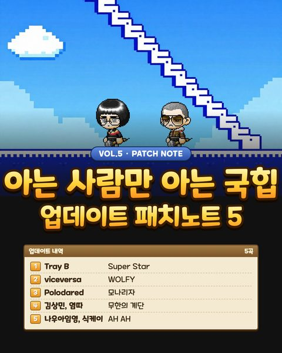
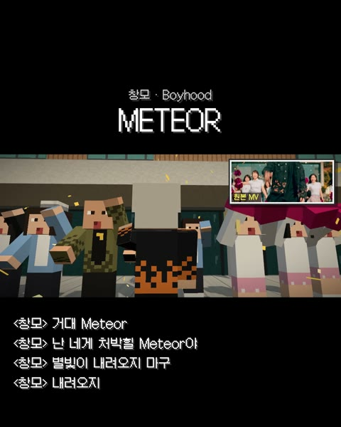
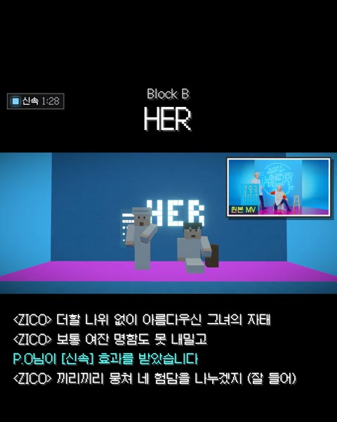
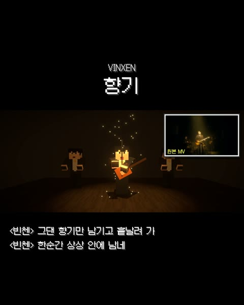
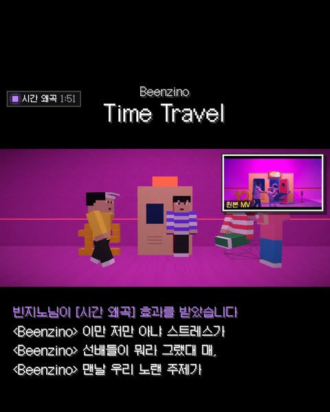

@ksap_gookhip케이셉 국힙
🎮 메이플 | 마크 국힙 플레이리스트 🎮월~목 곡 소개 | 금~일 뮤비밤 8시 30분 · 신청곡은 DM









국내 힙합 플레이리스트 × 메이플스토리 게임 화면 · 2026.11.24 첫 게시
케이셉 국힙 @ksap_gookhip
국힙 플레이리스트는 이미 많아서, 노래를 '듣기만' 하는 채널로는 눈에 띄기 어렵습니다. 그래서 목표를 '보는 플레이리스트'로 정했습니다. 곡마다 앨범 표지를 메이플 맵으로, 아티스트를 메이플 캐릭터로 바꿔 게임 패치노트처럼 매주 업데이트합니다.
왜 이렇게 만들고, 무엇을 목표로 하나
- 왜 메이플 화면인가국힙을 듣는 20~30대에게 익숙한 게임 화면을 빌려, 처음 듣는 곡이라도 스크롤을 멈추게 하려고 했습니다. 곡을 모르는 사람도 '이 장면 뭐지?' 하고 들어와 끝까지 보게 만드는 것이 목표입니다.
- 왜 숨은 곡인가유명한 곡은 어디서나 들을 수 있습니다. 아는 사람만 아는 곡을 골라 '이 계정에서만 알게 되는 곡'이 쌓이게 하고, 그것이 저장하고 팔로우할 이유가 되게 합니다.
- 왜 요일을 나누나월~목은 곡 소개로 새 곡을 알리고, 금~일은 아는 곡의 뮤비 명장면을 마인크래프트로 재현해 다시 보게 합니다. 새로움과 반가움, 매주 돌아올 이유를 두 가지로 둡니다.
- 왜 신청곡을 받나고정 댓글로 신청곡·주제를 받아 가장 많이 나온 것을 다음 편에 넣습니다. 보는 사람이 함께 만드는 플레이리스트가 되어 댓글·DM 참여가 자연스럽게 쌓이도록 했습니다.
만든 것 곡 소개 5편(곡 25개 영상·썸네일) · 마인크래프트 뮤비 재현 11편 · 하이라이트·계정 가이드